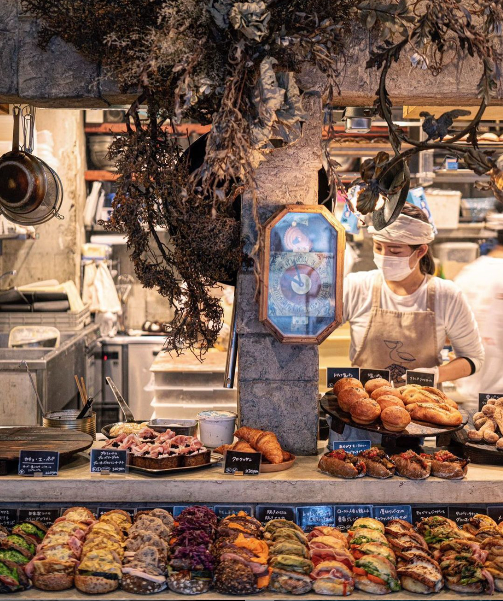
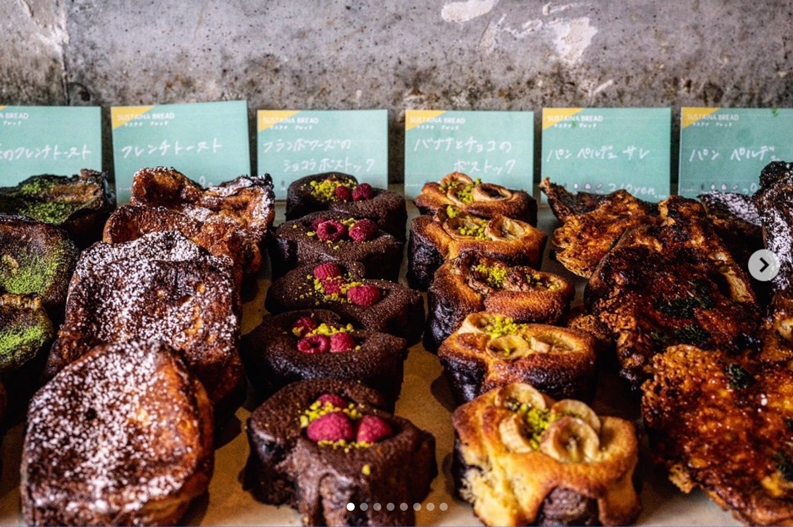
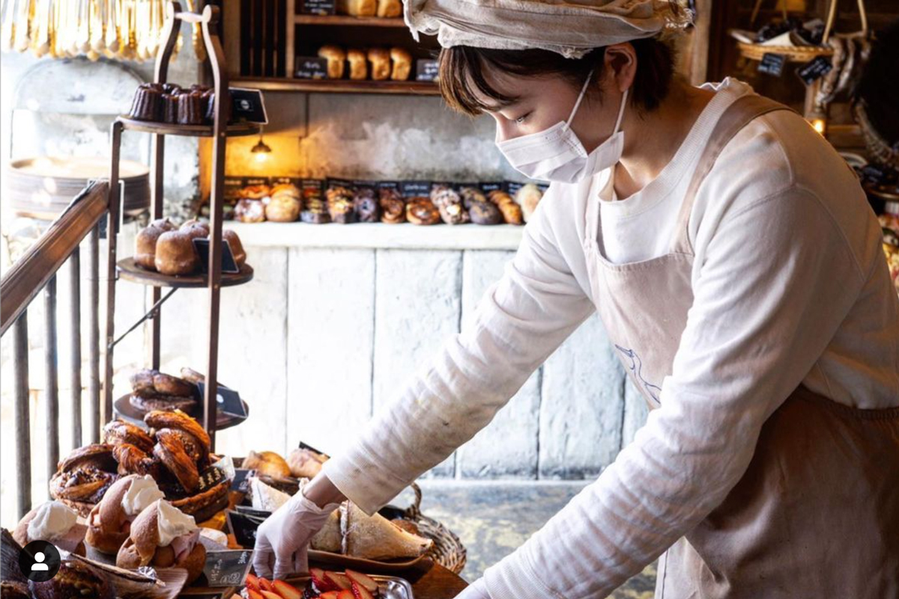

TODAY'S TOPIC
サステナブレッド
最近、ヘアサロンでパン特集の雑誌を読みました。そこで偶然見つけたアマムダコタンというパン屋さんが素敵な取り組みをしているのでご紹介します。(@福岡)パン屋さんもSDGsを考えているんですね。

img source -(https://www.instagram.com/amam_dacotan/)
このお店の特徴はサステナブレッドを販売していること。雑誌にはサステナブレッドとは何か、どうやって作っているかが細かく書かれていたのですが、WEBで再度検索したところヒットせず。。メモしておくべきでした。ただ、お店が運営するインスタにはサステナブレッドの情報がチラホラあるようです。

img source -(https://www.instagram.com/amam_dacotan/)
記憶の限りだと、その日に売れ残ったパンを、再加工して新たな姿に生まれ変わったパン、それをアマムダコタンは「サステナブレッド」と独自に名付けたそうです。ふわっとしたチョコパンを再加工してブラウニーのようなケーキにするなど、再加工後のパンもすごく美味しそうでした。

img source -(https://www.instagram.com/amam_dacotan/)
商店街やスーパー、コンビニでも、消費期限の迫った商品を安売りしていたりしますよね。この時私は「安いから買おう」ってなります。今回のアマムダコタンの場合は「廃棄するなんてもったいないから買おう」ってなる気がします。 やっていることはあまり変わらないけど、伝え方によって私たちの購入モチベーションに変化が起こるのですね。